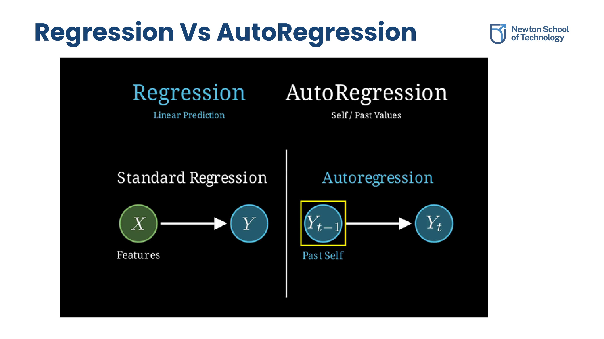
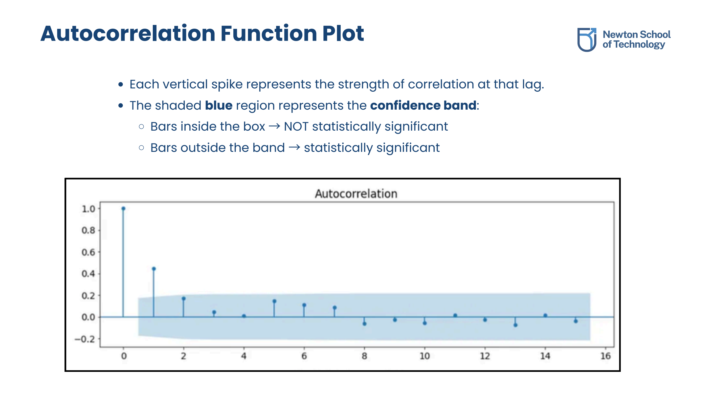
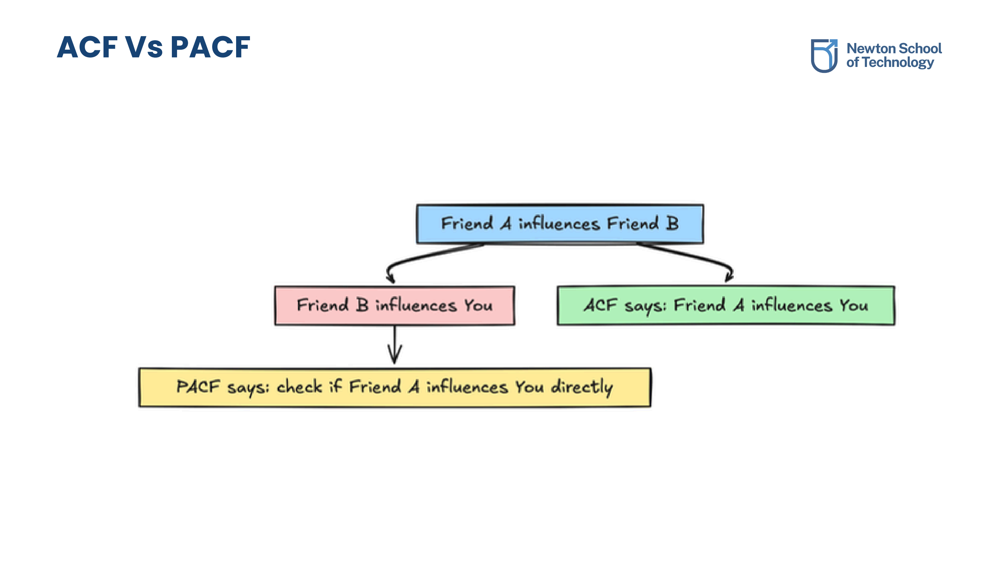
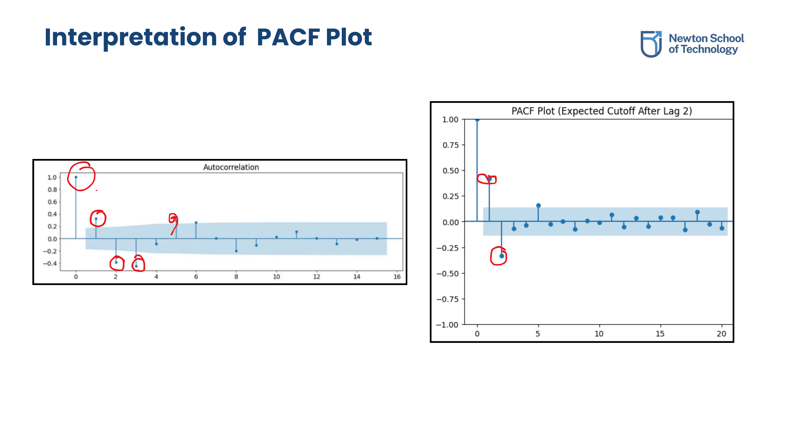
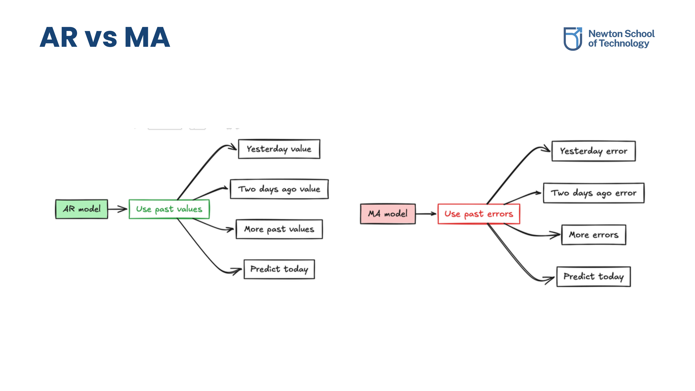
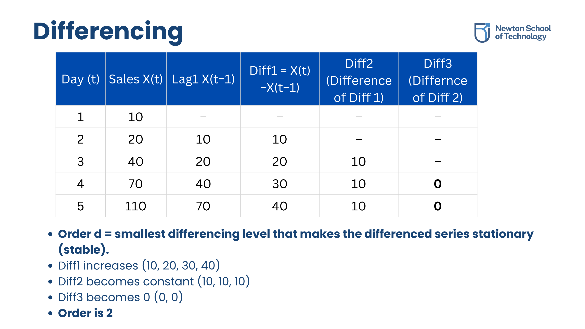

Autoregressive (AR) Models
1.1 Linear Regression using Lags
To predict the value of a time series at the current step (t), we can establish relationships using historical data points (lags). Instead of predicting using external parameters, we structure a linear regression where the inputs (X) are the past values of the variable itself, and the output (Y) is today's value.
If today's sales (Yt) are predicted solely by yesterday's sales (Yt-1):
Yt = w1Yt-1 + c + εt
Where w1 is the lag coefficient, c is a constant, and εt represents white noise.
1.2 The AutoRegressive Concept
An **AutoRegressive (AR)** model predicts a variable using a linear combination of its own historical values. The order of the model, denoted as **p**, indicates how many previous time steps (lags) are included in the equation.
Yt = c + φ1Yt-1 + φ2Yt-2 + ... + φpYt-p + εt
Where φ1, φ2, ..., φp are autoregressive parameters and εt is white noise (random shock).
1.3 Regression vs. AutoRegression
The core differences between standard linear regression and autoregression are summarized below:

Comparative breakdown: Standard Regression relies on external variables, whereas AutoRegression uses internal historical values as features.
Model Diagnostics: ACF vs. PACF
2.1 Autocorrelation Function (ACF)
The **ACF** calculates the total correlation between a data point and its past values across multiple lags. Spikes extending outside the shaded blue confidence band (typically representing a 95% confidence interval) indicate statistically significant correlations.

The ACF plot showcasing vertical spikes. Spikes exceeding the shaded box limits are statistically significant.
A negative spike at a specific lag (e.g., lag 2) indicates an inverse or correction relationship: if values were high 2 steps ago, the current value tends to be lower; if low 2 steps ago, the current value tends to be higher.
2.2 Partial Autocorrelation Function (PACF)
While ACF shows the **total correlation** (including indirect paths, e.g., Day 1 affecting Day 3 through Day 2), the **PACF** isolates the **direct relationship** between two time steps by mathematically removing the influence of all intermediate lags.

Comparison summary: ACF illustrates the combined total influence, whereas PACF isolates the clean, direct influence between lags.
2.3 Selecting Relevant Lags
PACF plots are the primary diagnostic tool used to determine the order **p** of an AR model. When the PACF has a set of significant spikes and then drops abruptly into the confidence band, the number of significant spikes defines the AR model order.

Interpretation example: A strong positive spike at lag 1 and a negative spike at lag 2, with subsequent lags remaining within noise bounds, implies an AR(2) process.
Moving Average (MA) Models
3.1 Error Terms & Shocks
No model forecast is perfect. The difference between the actual value and the model's past-value prediction is the **residual**, **innovation**, or **shock** (εt). Shocks represent unexpected news, policy changes, or random events whose impact may persist across multiple steps (ripple effect).
3.2 MA Model Formulation
A **Moving Average (MA)** model predicts today's value based on a linear combination of the series' historical error terms (shocks). The model order **q** indicates the number of past error terms included in the equation.
Yt = μ + εt + θ_1εt-1 + θ_2εt-2 + ... + θ_qεt-q
Where μ is the series mean, εt is the current shock, and θ coefficients represent how much past shocks persist into the present.
Unlike AR models which use PACF plots, MA model orders (q) are selected using ACF plots. If the ACF has significant spikes up to lag q and then cuts off, it suggests an MA(q) process.
3.3 AR vs. MA Model Attributes
A summary comparison of AR and MA model diagnostics and properties:

Comparison matrix mapping AR and MA equations, diagnostic plots (ACF vs PACF), and correlation parameters.
Integration & ARIMA
4.1 Order of Integration I(d)
Both AR and MA models assume that the time series is stationary. If the series contains trend or seasonality, we must difference it **d** times before it becomes stationary. The minimum number of differencing operations required is the **order of integration (d)**, written as **I(d)**.
4.2 Finding the Integration Level
We determine the required level of integration by repeatedly differencing the series and evaluating stability:

Tabular example of differencing: the first difference increases systematically, but the second difference becomes stable and constant (d=2).
- Visual Inspection: Checking if a trend is present in the plot (typically I(1) or I(2)).
- Statistical Tests: Utilizing unit root tests such as the Augmented Dickey–Fuller (ADF) test, the KPSS test, or the Phillips–Perron (PP) test.
4.3 The Combined ARIMA(p,d,q) Model
The **ARIMA** (AutoRegressive Integrated Moving Average) model integrates all three components to handle non-stationary series containing trends:
- AR (p): Uses past values to predict current values (order checked via PACF).
- I (d): Differences the series d times to make it stationary.
- MA (q): Uses past errors/shocks to correct current predictions (order checked via ACF).
- p (AR order): Number of past lags to look at.
- d (Integration order): Number of times the series is differenced to stabilize the mean.
- q (MA order): Number of historical shocks to include.
Original PDF Notes
Below is the original PDF document for your reference: